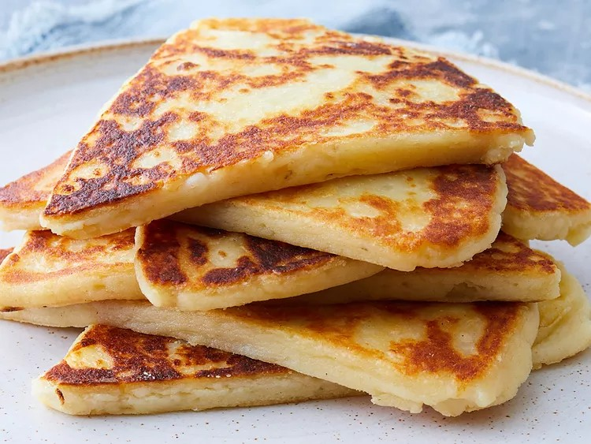

Potato scones

Description
Tattie scones are similar to potato pancakes.
From an Irish and Scottish background, these scones are the perfect side with any breakfast meal and are a family favorite!
Add onion, pepper, or any other spices for flavor. Serve with butter. Enjoy.
Ingredients:
- Cooked potatoes
- Self-rising flour
- Butter
- Salt
Steps
- Heat a lightly greased griddle or cast iron skillet over medium-high heat.
- Mash potatoes with flour, butter, and salt in a large bowl until a stiff dough forms.
- Turn dough out onto a lightly floured work surface. Knead dough lightly and roll dough out to a 1/2-inch-thick circle. Cut into 6 equal wedges.
- Working in batches, cook scones on the hot griddle until golden brown, 4 to 5 minutes per side.
Enjoy!